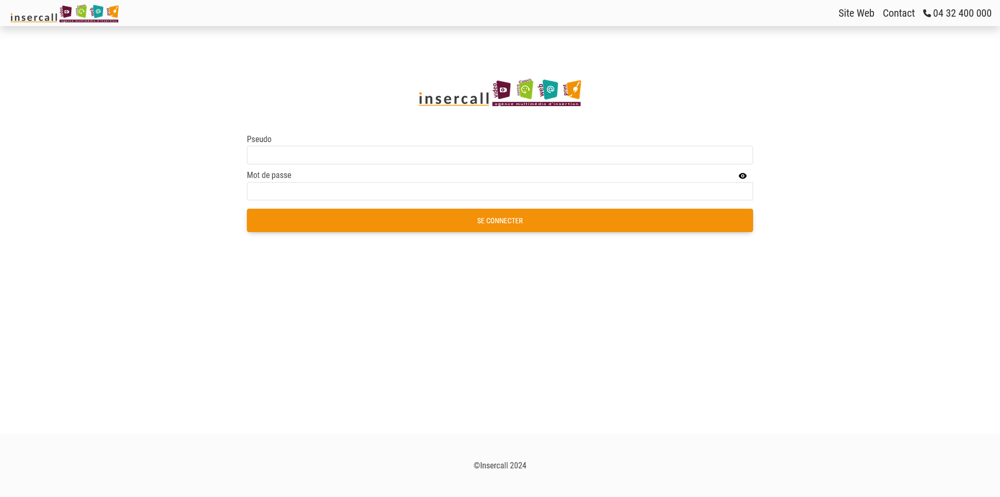
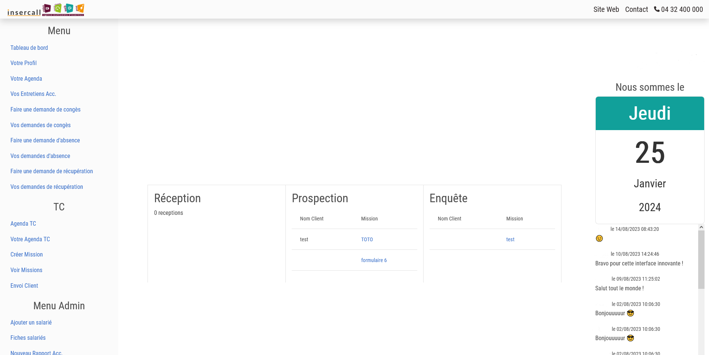
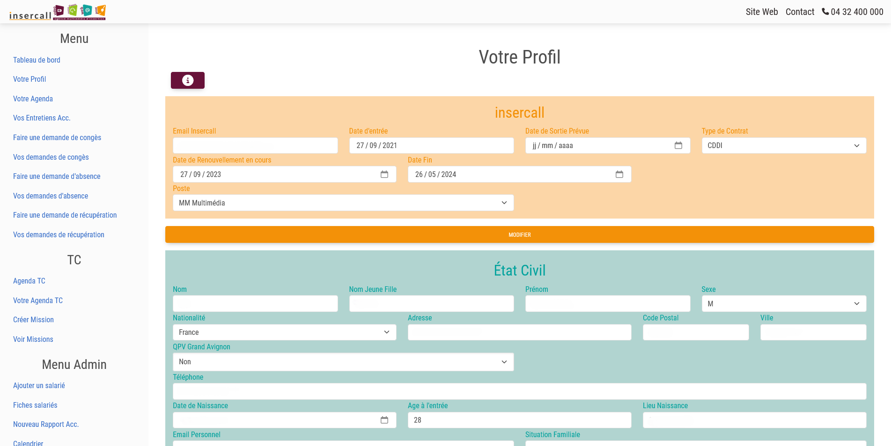
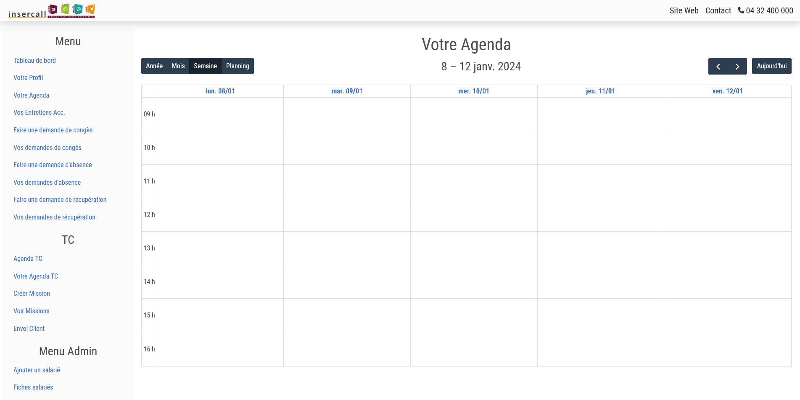
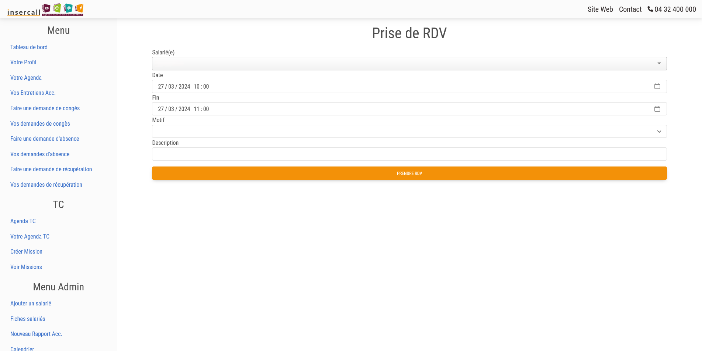
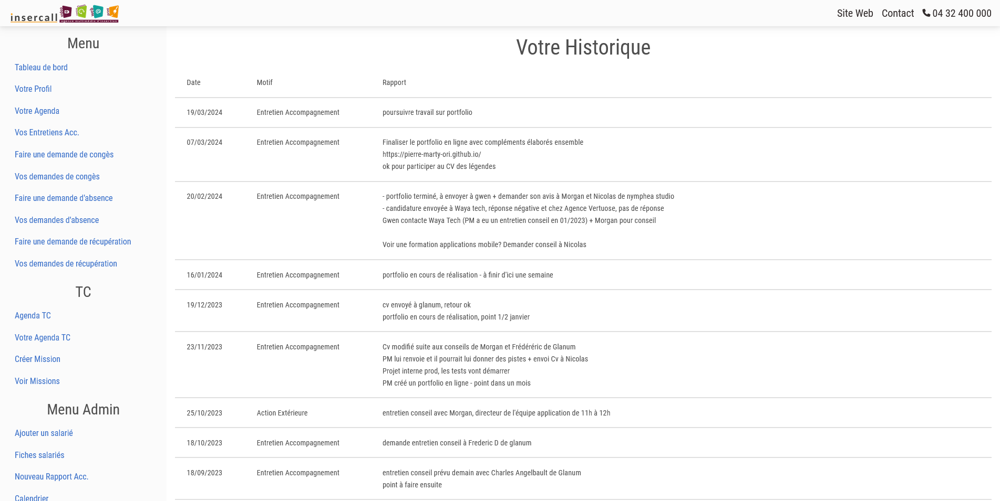
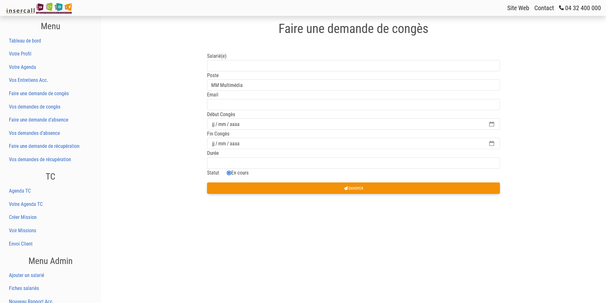

Le projet consiste à refaire intégralement l'intranet pour la gestion des RH de l'association et la traçabilité de l'accompagnement de salariés en insertion, cette application a été créée sur mesure pour insercall.
insercall est un chantier d'insertion ce qui implique plusieurs spécificités :
Il s'agit d'un formulaire de connexion permettant d'accéder à l'intranet.

Page d'accueil de l'intranet après connexion selon le niveau d'autorisation du salarié(e).

Chaque salarié(e) doit compléter leur profil.

Calendrier d'accompagnement des salarié(e)s avec prise de rdv.

Formulaire de prise de RDV d'un salarié dans le cadre de son accompagnement.

Historique de l'accompagnement du salarié

Formulaire permettant de faire une demande de congès.
